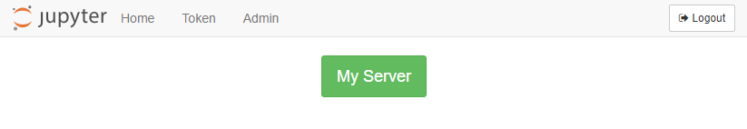

Install JupyterHub
After the server is set up, it is time to install JupyterHub.
Update System
It is probably best to update the packages installed on the server in case there are changes and updates to the operating system since the server was created. sudo apt-get update is probably a reflex for those that use Linux a lot.
Open PuTTY and log into the server as the non-root sudo user we created in the last step. Then update the system:
$ sudo apt-get update
$ sudo apt-get upgrade
Install Miniconda
Next we'll install Miniconda. In the last JupyterHub deployment, I installed the full version of Anaconda in the non-root user's home directory(/home/peter/). The user's home directory is the default Anaconda3 installation location.
However, for this JupyterHub deployment, we'll install Miniconda in the /opt directory. The Miniconda install is lighter than the full Anaconda install, and we don't need all the GUI applications that Anaconda provides. The packages that we need in this deployment of JupyterHub, we can install in a seperate virtual environment.
I followed this tutorial from Digital Ocean.
Go to https://repo.continuum.io/archive/ and look down the list of installs for the newest installer that corresponds to:
- Miniconda3 (not Miniconda2, we don't want legacy Python version 2.7)
- Linux
- x86
- 64 (bit)
- .sh (linux shell script)
The URL of the latest Miniconda install for Linux will look something like:
https://repo.continuum.io/miniconda/Miniconda3-latest-Linux-x86_64.sh
To downland and install Miniconda on the server, we'll use the curl command and run the bash installer from the command line:
$ cd /tmp
$ curl -O https://repo.continuum.io/miniconda/Miniconda3-latest-Linux-x86_64.sh
$ sudo bash Miniconda3-latest-Linux-x86_64.sh
During the Miniconda install, we need to specify the following installation directory:
/opt/miniconda3/
When the Miniconda install finished, the installer asked
Do you wish the installer to initialize Miniconda3
by running conda init? [yes|no]
I selected yes to run conda init.
We want to be able to run conda from the command line. So make sure to allow Miniconda to append your PATH during the installation. After installation, we need to reload the .bashrc file because Miniconda made changes to our .bashrc during the install (when it added conda to our PATH).
$ cd ~
$ source .bashrc
When the install is complete, look in /opt, and see the miniconda3 directory.
$ cd /opt
$ ls
miniconda3
Change Miniconda3 Permissions
Now we need to deal with some permission issues. Since I am running as the user peter on the Digital Ocean server, I need to make sure that the user peter has read, write, and execute permissions on the enitre /opt/miniconda3/ directory.
We can give our peter user permissions with chmod and chown.
$ cd /opt
$ ls
miniconda3
$ ls -la
total 12
drwxr-xr-x 3 root root 4096 Oct 30 04:47 .
drwxr-xr-x 23 root root 4096 Oct 29 17:49 ..
drwxr-xr-x 13 root root 4096 Oct 30 04:47 miniconda3
Currently, the owner of the miniconda3 directory is root and the group is root. The owner root has read, write, execute privaleges (rwx) and the group root has read, execute privaleges (r-x), but no write prvialeges.
Let's modify the read, write, execute privaleges of the minconda3/ directory so that the group root can read, write, and execute (rwx).
$ sudo chmod -R g+w miniconda3/
$ ls -la
total 12
drwxr-xr-x 3 root root 4096 Oct 30 04:47 .
drwxr-xr-x 23 root root 4096 Oct 29 17:49 ..
drwxrwxr-x 13 root root 4096 Oct 30 04:47 miniconda3
OK, now let's change the group corresponding to the miniconda3/ directory from root to peter.
$ sudo chown -R root:peter miniconda3/
$ ls -la
total 12
drwxr-xr-x 3 root root 4096 Oct 30 04:47 .
drwxr-xr-x 23 root root 4096 Oct 29 17:49 ..
drwxrwxr-x 13 root peter 4096 Oct 30 04:47 miniconda3
Now the user peter will be able to install packages using conda and pip in the miniconda3 installation in the /opt directory.
Now that the permissions are changed, we should be able to run conda from the command line. Try:
$ conda --version
If you see output, that means Miniconda was installed and conda can be run by the non-root user.
Create a virtual environment and install and packages
For this JupyterHub install, we are going to create a conda environment (a virtual environment) and install packages into that environment.
I had trouble with conda hanging during the JupterHub installation, and I wondered if it had something to do with the Anaconda installation being so large. (Really, now I think it might also have something to do with Python version 3.7).
In a previous JupyterHub installation, when I tried to make a Python 3.7 conda environment and install JupyterHub into it, conda downgraded Python from 3.7 to 3.6.
In Fall 2019, I am pretty sure that JupyterHub runs on Python 3.7, but I still had trouble installing conda packages into the conda environment I created based on Python 3.7. When I tried to install conda packages into the environment I recieved "can't access such and such file at .gobledegook". But when I closed the terminal, took a 5 hour break, and opened up a new terminal, I could install conda packages just fine. Maybe just logging in and out worked? I'm not really sure.
But the conda environment was created with Python 3.7 and now I can install packages into it, so I'll count that as a win. Maybe logging out and back in does the trick.
Note: Don't forget to install xlrd, this package is needed for pandas to read .xlsx files.
$ conda create -n jupyerhubenv python=3.7
$ conda activate jupyterhubenv
(jupyterhubenv)$ conda install numpy matplotlib pandas scipy sympy seaborn bokeh holoviews pyserial xlrd jupyter notebook
(jupyterhubenv)$ conda install -c conda-forge pint altair
(jupyterhubenv)$ conda install -c conda-forge jupyterlab
(jupyterhubenv)$ conda install -c conda-forge jupyterhub
Now try conda list and see all of the packages that are installed in (jupyterhubenv).
(jupyterhubenv)$ conda list
# packages in environment at /opt/miniconda3/envs/jupyterhubenv:
#
# Name Version Build Channel
_libgcc_mutex 0.1 main
alembic 1.0.11 py_0 conda-forge
altair 3.2.0 py37_0 conda-forge
...
Run a very unsecured instance of Jupyter Hub just to see if it works
So... This might not be a good idea, but let's see if JupyterHub works. We can run JupyterHub on our server, but the ufw firewall is blocking port 8000. We can open port 8000 using the command below.
$ sudo ufw allow 8000
$ sudo ufw status
Status: active
To Action From
-- ------ ----
OpenSSH ALLOW Anywhere
8000 ALLOW Anywhere
OpenSSH (v6) ALLOW Anywhere (v6)
8000 (v6) ALLOW Anywhere (v6)
OK let's give JupyterHub a whirl. We'll start JupterHub for the first time. Note the --no-ssl flag at the end of the command. This flag needs to be included or you won't be able to browse to the server. Also note we have to be our (jupyterhubenv) virtual environment active when we run the command.
$(jupyterhubenv) jupyterhub --no-ssl
We see some output in the PuTTY window. The last line is something like JupyterHub is now running at http://:8000/. The first time I set up JupyterHub, I wasn't able to see the site using a web browser. No web page loaded, and the connection timed out. Opening port 8000 did the trick.
Now we can browse to the server IP address of our Digital Ocean Droplet appended with :8000. The web address should look something like: http://165.228.68.178:8000. You can find the IP address of the server by going into the Digital Ocean dashboard.
The JupyterHub login screen looks like:
Awesome! Quick log into JupyterHub using the username and password for the non-root sudo user (in my case peter) that we set up and are using in our current PuTTY session.
You should see the typical notebook file browser with all the files you can see when you run ls ~/. Try creating and running a new Jupyter notebook. The notebook works just like a Jupyter notebook running locally.


Quick! Log out and shut down JupyterHub
Warning
Warning! You should not run JupyterHub without SSL encryption on a public network.
Quick! Log out and shut down JupyterHub. (does quick really matter in internet security?) The site is running without any ssl security over regular HTTP not HTTPS. Key in [Ctrl] + [c] to stop JupyterHub.
After I shut the JupyterHub instance down, I re-blocked port 8000 with the command below.
$ sudo ufw deny 8000
$ sudo ufw status
Status: active
To Action From
-- ------ ----
OpenSSH ALLOW Anywhere
8000 DENY Anywhere
OpenSSH (v6) ALLOW Anywhere (v6)
8000 (v6) DENY Anywhere (v6)
Next Steps
The next step is to aquire a domain name and link it to our Digital Ocean server.